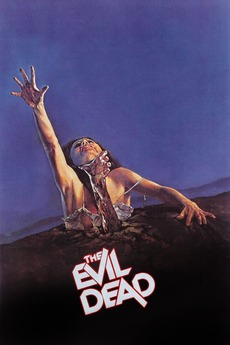
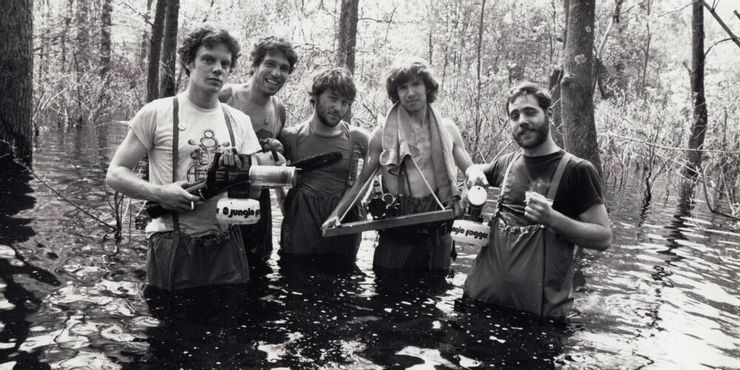
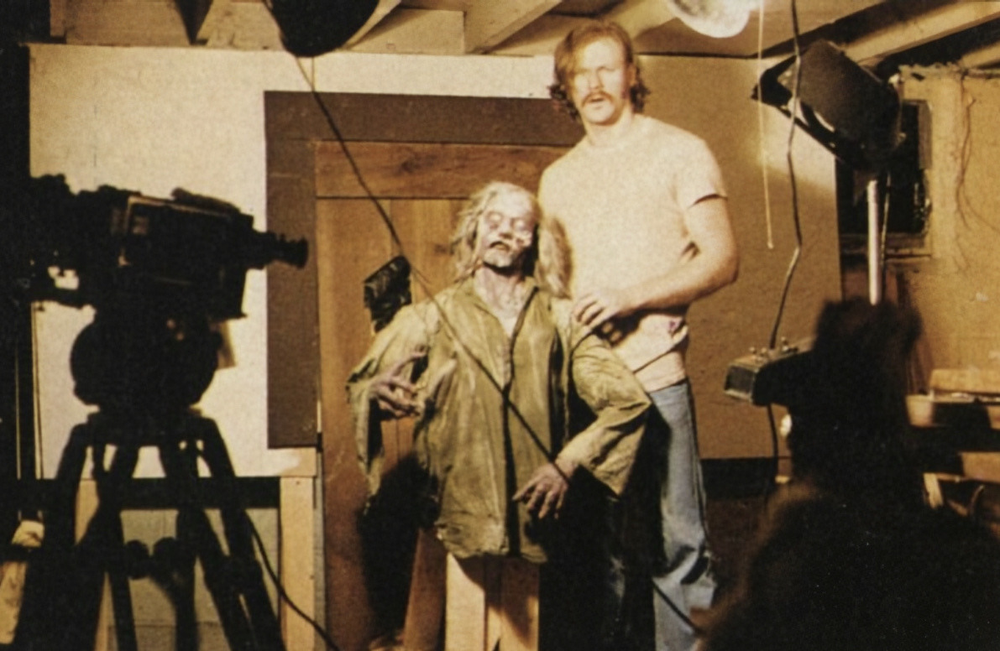

The Splatter Movie
Director: Sam Raimi
Starring: Bruce Campbell, Ellen Sandweiss, Richard DeManincor, Betsy Baker, Theresa Tilly
Runtime: 1h 25m
Other indie recommendations:
Re-Animator (1985)
Bad Taste (1987)
Dead Alive (1992)

Production
It was based on a short film called Within the Woods, that served as a “proof of concept” that got Sam Raimi $90,000 (later $375,000) to produce the film. It was filmed in a secluded cabin in Tennessee and was an extremely difficult process for the cast and crew, who had to suffer through frostbite, injuries, and irritation.

Influence
Its graphic violence may have gotten it into trouble with the censors, but this was always a problem of splatter movies back then. Its ingenious, low-budget special effects and terrifying scares still hold up today and are part of what makes it one of the best-known cult films today. The Evil Dead was released with lukewarm reception until a rave review from famous horror author Stephen King led it to the Cannes Film Festival and to it popularizing the splatter genre beyond an underground horror subgenre.
SOURCES:
Pics:
Den of Geek, Tumblr, Screen Rant
Video:
Abehorror
Info: https://evildead.fandom.com/wiki/The_Evil_Dead